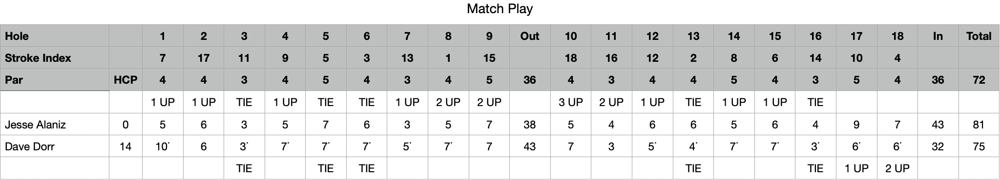
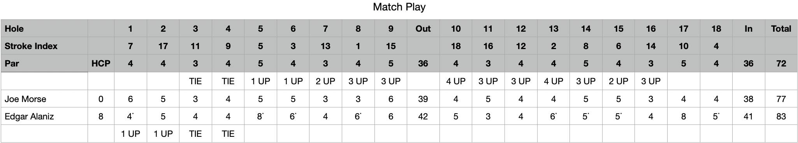
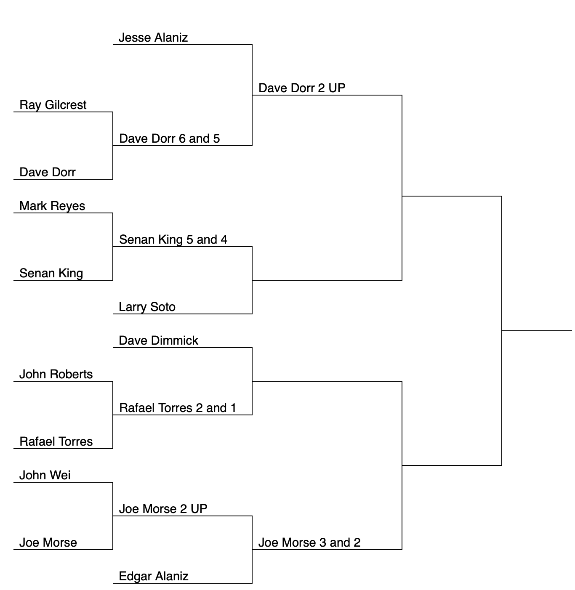
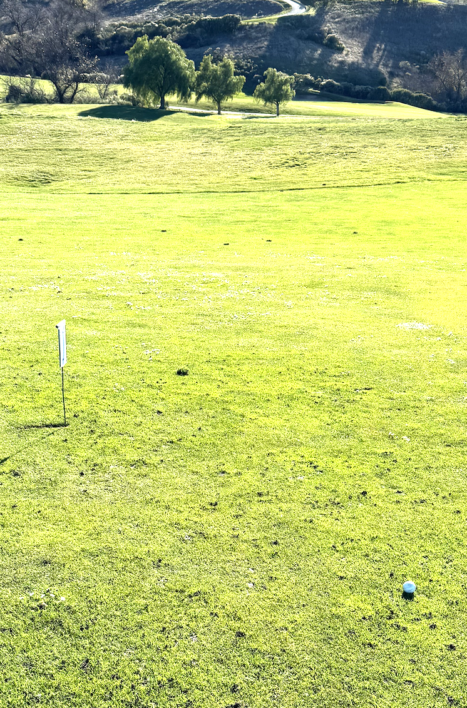
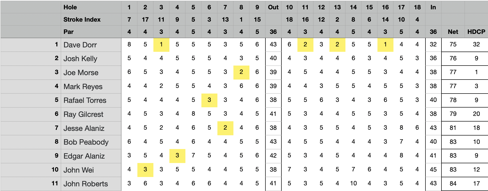

January Newsletter at Poppy Ridge
| Place | Name | Net Score |
|---|---|---|
| 1st Place | Dave Dorr | 75 |
| 2nd Place | Joe Morse | 77 |
| 3rd Place | Mark Reyes | 77 |
| 4th Place | Rafael Torres | 78 |
Last Updated: January 17, 2024, 08:00
It looks like we're in a bit of a bunker here with Bob Peabody deciding to hang up his treasurer's cap after a solid 27-year round, and Larry Soto planning to putt away from the club. It's like finding ourselves in the rough needing a couple of strong swings to get back on the fairway.
Stepping up to be the Treasurer is not just about keeping the scorecard straight; it's about ensuring our club's financials are as neat as a freshly raked sand trap. And taking over Larry's role? That's like being the one to set up the tee times for our tournaments – crucial for keeping the game going!
We definitely need some club champions to drive forward and keep the SOGC from turning into an abandoned clubhouse. Remember, in golf as in clubs, it's all about teamwork and chipping in where we can. So, who's ready to take a swing at these roles? Let's keep our club as lively as a hole-in-one celebration! How about it, Champions? Who's ready to step up and wear the green jacket of responsibility?
February's Tournament will be held at Baylands on Sunday, February 4th at 10 AM.

It is imperative that you arrive no later than 30 minutes prior to the first tee time. Failure to do so causes significant inconvenience for those responsible for collecting money and checking people in, as they are unable to warm up. Additionally, arriving early will not only alleviate this issue but also enable you to play better.
2023/2024 Match Play Round Two Results:
Ah, what a thrilling day on the greens, Ace! In the opening match, Jesse Alaniz teed off like a pro, swiftly establishing a +3 lead over Dave Dorr. It was like watching a golfer smoothly navigating the front nine. But then, Dave found his swing, making a stunning comeback by clinching holes 11, 12, and 13, leveling the playing field as if sinking a long putt for a birdie.
After a brief stumble on hole 14, Dave turned into a real fairway wizard, conjuring up a magic spell and bagging 3 consecutive wins. It was like watching a masterful chip-in from the fringe, finishing the match 2 up - a spectacular display of grit and skill.
Meanwhile, in the other match, Joe Morse was like a steady golfer playing a conservative game, methodically building a +4 lead. His approach was akin to strategically placing each shot on the fairway, avoiding the hazards. By the 10th hole, his lead was as solid as a well-placed tee shot. Joe then wrapped up the match with a 3 & 2 win, showcasing the finesse of a seasoned golfer lining up a putt for the championship.
These matches were more gripping than a golfer's hold on a lucky club, a true showcase of the swings and roundabouts of golf.
 CPs: Mark Reyes (#3) Mark Reyes (#7) John Wei (#11) Joe Morse (#16)
Long Drive: Mark Reyes (by a yard)
Low Putts: Mark Reyes (30)
High Putts: John Roberts (41)
Birdie Shooters: Joe Morse (8,17) Mark Reyes (3,12,18) John Wei (2)
3 Putts: In the realm of the greens, where the dreaded 3 putts haunted many, Mark Reyes emerged as the unwavering maestro, the sole player to defy the three-putt specter with his flawless precision.
Chip Ins: John Wei's chip-in on hole 9 to save par was like a masterclass in precision and control, reminiscent of a golfer who knows just how to dance the ball around the green. It's like he read the green as if it were an open book, predicting exactly how the ball would roll. Then, Joe Morse on hole 14, chipping in to save par – what a moment! It's the kind of shot that brings the crowd to its feet, as if he'd just sunk a long birdie putt in a major. These moments are what make golf such a thrilling sport; it's not just about the long drives, but also these moments of finesse and flair around the greens.
How Did We Do? Hole 3 was the friendliest member of the course's welcoming committee, offering a gentle handshake to our golfers. With an average score just a hair above par at 0.6, it must have been like a kindly old caddie offering sage advice. Perhaps the pin placements were just right, or maybe a benevolent breeze was guiding the balls towards the hole, like a helpful guide in the wilderness of the fairways. Conversely, holes 1, 5, and 6 turned into the course's own daunting trio, akin to Amen Corner at Augusta. These holes, averaging a hefty 1.6 strokes over par, must have been like stern gatekeepers, challenging every golfer who dared to traverse their paths. Maybe the greens were as tricky as a riddle, or the winds as unpredictable as a plot twist in a mystery novel. Or perhaps, the rough was just unforgiving, like a strict teacher marking a tough exam. These contrasting experiences are what make golf such a rich and varied tapestry. Some holes welcome you with open arms, like an old friend, while others test your mettle, pushing you to dig deep into your bag of tricks. It's about navigating these ups and downs, much like reading a difficult putt - sometimes you nail it, and other times, you just have to tip your hat, learn from the experience, and stride confidently to the next challenge. That's the beauty and the intrigue of this grand old game!
Low Gross: Joe Morse really showed his class in the latest round, carding the low gross with a stellar 78. That's like effortlessly clearing a water hazard and landing neatly on the green.
Swinging into the clubhouse leaderboard, we had the 2-Man Best Ball. The duo of Reyes and Dorr, played like they had the golden touch, posting a sizzling score of 65, a fantastic 7 under par, making them the top dogs of this round.
Swing into action, let's tally up those skins from this round of golf!
Dave Dorr really stole the show with a whopping 4 skins. That's like consistently hitting the green in regulation and then some. No jokes here, just pure admiration for a golfer who's clearly got his game dialed in. It's like watching a pro navigate a challenging course with the ease of a Sunday morning round.
Rafael Torres snagging a pair of skins is no small feat either. It's like pulling off those key shots that make all the difference, whether it's a clutch par save or a sneaky birdie.
And for the rest of the unnamed sharpshooters pocketing one skin each, it's like each found their moment of glory, shining bright like a well-polished golf club. In a skins game, every hole is a new battle, and they played like true warriors of the green.
It's a bit of a rough for Mr. Peabody, Mr. Gilcrest, Mr. Reyes, and Mr. Roberts, missing out on the skins this time. But that's golf for you - a game where fortunes can turn as quickly as the wind changes direction. At $5 per skin with 10 claimed, it's clear that the competition was as intense as the final round of a major championship.
| Place | Name | Net Score |
|---|---|---|
| 1st Place | Joe Morse(T/B) | 71 |
| 2nd Place | Ted Escobar | 71 |
| 3rd Place | John Wei | 75 |
| 4th Place | Mark Reyes (T) | 76 |
| 4th Place | Jesse Alaniz (T) | 76 |
| 4th Place | Dave Dimmick (T) | 76 |
| 4th Place | Dave Dorr (T) | 76 |
| Place | Name | Net Score |
|---|---|---|
| 1st Place | Mark Reyes | 66 |
| 2nd Place | Jesse Alaniz | 69 |
| 3rd Place | Rafael Torres | 70 |
| 4th Place | Edgar Alaniz (T) | 71 |
| 4th Place | Bob Peabody (T) | 71 |
| Place | Name | Net Score |
|---|---|---|
| 1st Place | Dave Dorr | 69 |
| 2nd Place | Jesse Alaniz | 70 |
| 3rd Place | Joe Morse | 73 |
| 4th Place | Quincy Virgilio | 75 |
| Place | Name | Net Score |
|---|---|---|
| 1st Place | Edgar Alaniz | 64 |
| 2nd Place | Quincy Virgilio | 66 |
| 3rd Place | Ray Gilcrest (T) | 70 |
| 3rd Place | Antonio Villa (T) | 70 |